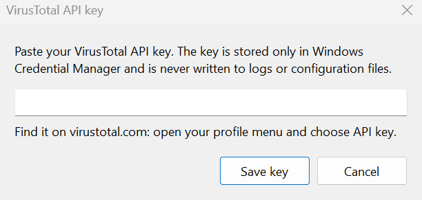

Sits in your tray. Checks new programs in the folders you choose. About 0.4 MB of memory while idle.
Sample label. The fingerprint is the real installer; the engine count illustrates a clean result.
Ask before uploadingUnknown files are only sent if you say yes
Advisory onlyOne opinion, never a guarantee
Read this before you install
Everything VT Tray does, in plain words. Keep it, you may want to read it again.
1 What VT Tray is and what it is used for
VT Tray is a small app that lives next to your clock. When a new program or script lands in a folder you watch, it waits until the file stops changing, then works out its fingerprint (a SHA-256 hash) on your PC.
It asks VirusTotal about that fingerprint, and shows what more than seventy security engines thought of the file. If they already know it, nothing else happens.
2 How to use VT Tray
From the tray: right-click the icon and choose Check a file.
From Explorer: right-click any file, Show more options, Check with VT Tray.
Watched folders: add your Downloads folder and new programs are checked as they arrive.
The tray menu, as shipped.
3 What you need
A free VirusTotal account and its API key. Paste it once under Settings, Set or replace API key. It is kept in Windows Credential Manager and never written to logs or settings files.

Where your key goes.
Before anything is uploaded, you are asked. Every time.
Most files are already known to VirusTotal, so only their fingerprint is needed. For a file it has never seen, VT Tray can upload it, but only after this question, for that one file. No is the default answer.
Uploaded files are shared with VirusTotal's security community, which is why the question exists.
Uploading sends the file content to VirusTotal and shares it with the security community. Only upload files you are allowed to share.
Upload this file?
YesNo
The wording VT Tray uses. File details are illustrative.
Do not exceed the free limits. VT Tray won't.
Per API key
No more than 4 checks a minute.
No more than 500 checks a day, 100 of them kept for the files you check yourself.
No more than 15.5K checks a month.
One counter guards every request, survives restarts, and warns you before a limit is reached, so a busy Downloads folder never uses up the checks you wanted for yourself.
Side effects: none you will notice
0.4 MB of memory and no CPU while idle, measured on every build.
VT Tray will never
upload a file you did not say yes to
delete, quarantine, or change your files
send your folder paths, only a file's name
collect telemetry or need an account of its own
need administrator rights
Results are advisory: VirusTotal is one opinion, not a guarantee that a file is safe or unsafe.
What is in the pack
A quick check never uploads.Settings, one click from the tray.A standard installer, just for your account.
Questions people ask
Is it free?
Yes. VT Tray is open source under the MIT license and works with a free VirusTotal account.
Will it upload my files on its own?
No. Watched folders and quick checks only look up fingerprints. An upload always needs your yes for that specific file.
Is it an antivirus?
No. It shows you VirusTotal's opinion so you can decide. It never blocks or removes anything.
How do I remove it completely?
Uninstall from Settings, Apps. Startup and Explorer entries, the saved key, settings, cache, and logs all go with it.
Your next download deserves a label.
VT Trayv1.0.0
Free and open source. Windows 10 and 11. Installs for your account only, no admin rights.